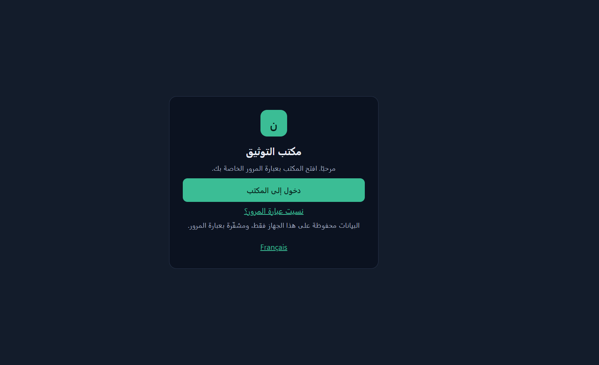
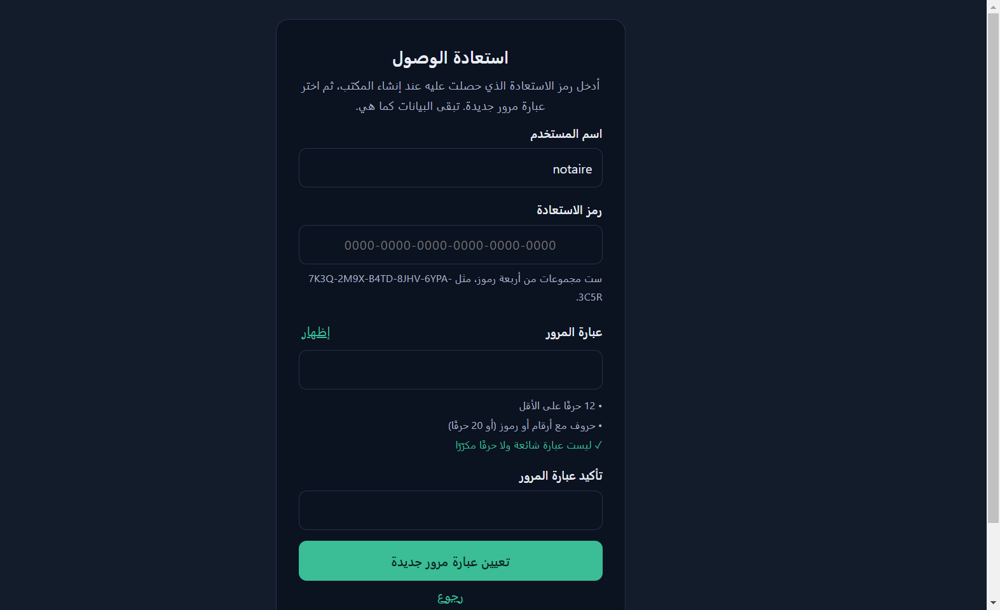
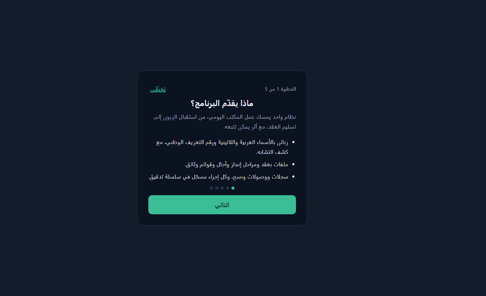
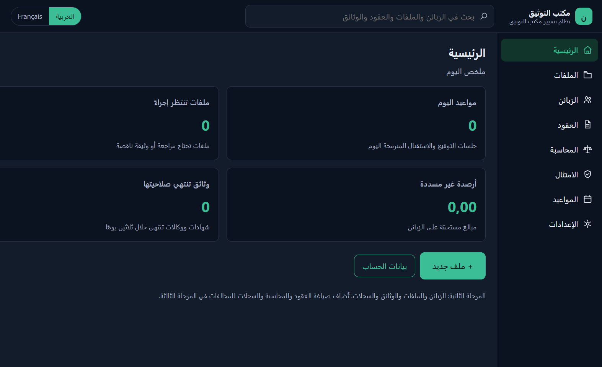
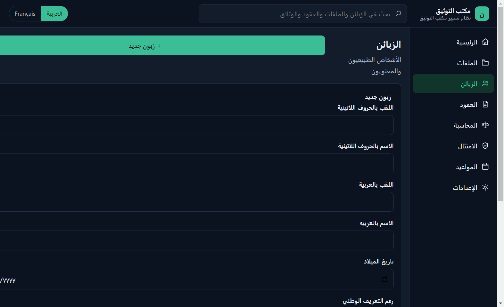
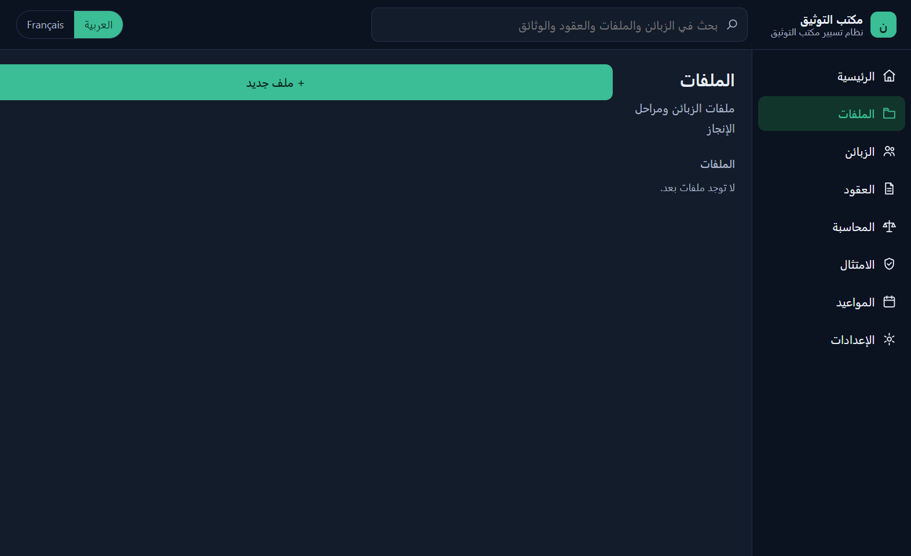
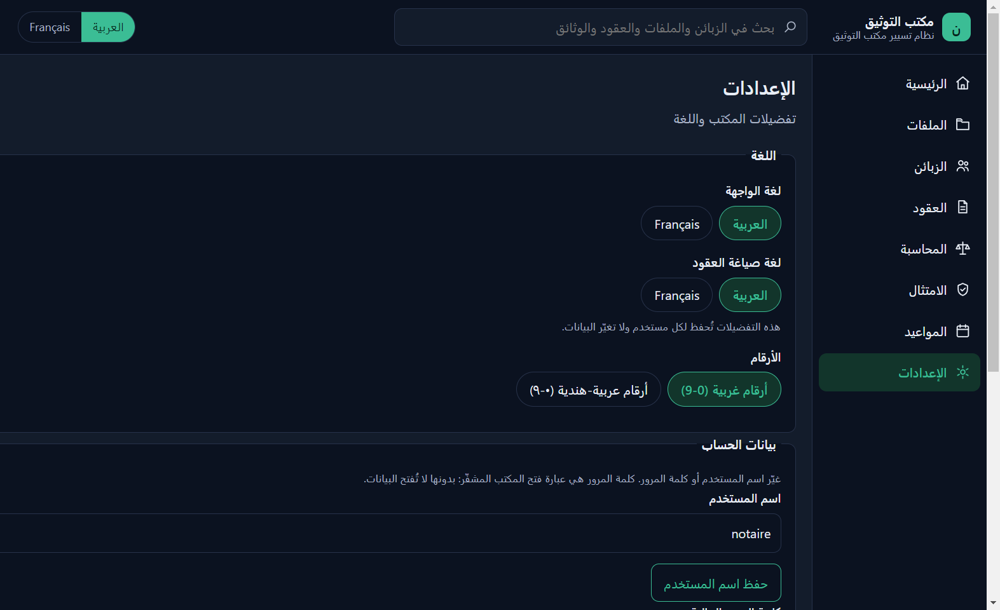

دليل الاستعمال — NotaireDZ
Manuel d'utilisation — application de gestion d'étude notariale
نظام مكتبي يعمل دون إنترنت لتسيير الزبائن والملفات والوثائق والسجلات، بواجهة عربية وفرنسية وبيانات مشفّرة على الجهاز.
الإصدار 0.1 — المرحلة 2 (الزبائن، الملفات، الوثائق، السجلات) تاريخ التحرير: 16 نوفمبر 2026البرنامج يساعد المكتب على إمساك العمل اليومي في مكان واحد: استقبال الزبون، فتح الملف، متابعة المراحل والآجال، وحفظ الوثائق، مع سجل تدقيق يجعل كل إجراء قابلًا للتتبع.
| المجال | ما هو متوفر الآن |
|---|---|
| الزبائن | أسماء عربية ولاتينية، تاريخ الميلاد، رقم التعريف الوطني، بحث فوري، وكشف التشابه بين الأسماء لتجنّب التكرار. |
| الملفات | فتح ملف بعقد ومرحلة إنجاز وأجل، تصفية حسب الصلاحيات، وشارة لكل مرحلة. |
| الوثائق | خزنة ملفات مشفّرة لكل وثيقة مفتاح خاص وبصمة تحقّق SHA-256، مع منع الحذف عند الحجز القانوني. |
| السجلات | ترقيم السجلات بعد التوقيع فقط، ووصولات، وإعادات نسخ، وسلسلة تدقيق متصلة. |
| اللغة | عربية أساسية مع فرنسية، وتغيير فوري دون إعادة تشغيل، واتجاه الواجهة يتبدّل تلقائيًا. |
| الأمان | تشفير على مستوى الحقول، حساب واحد للمكتب في هذه المرحلة، ولا أي اتصال بالإنترنت. |
ما لا يزال قيد الإنجاز مذكور صراحة في القسم 12، ولا يُعرض في البرنامج كأنه جاهز.
البرنامج يعمل من ملف واحد على ويندوز، ولا يحتاج إنترنت ولا حسابًا سحابيًا:
عند أول تشغيل يُنشئ البرنامج المكتب تلقائيًا ويحفظ مفتاحه في الجهاز، ثم يعرض شاشة الدخول وقد عُبّئت مسبقًا باسم المستخدم «admin» وكلمة المرور «admin». اضغط «دخول» لتبدأ.
أقصر كلمة مرور مقبولة خمسة أحرف. غيّرها فورًا من «بيانات الحساب» في الإعدادات.

شاشة البداية: الدخول إلى المكتب أو استعادة الوصول.
من شاشة الدخول اضغط «نسيت عبارة المرور؟»، ثم أدخل اسم المستخدم ورمز الاستعادة وعبارة مرور جديدة. البيانات تبقى كما هي، ويعطيك البرنامج رمز استعادة جديدًا لأن الرمز المستعمل يُلغى.

استعادة الوصول: رمز الاستعادة + عبارة مرور جديدة، دون فقدان أي ملف.
بعد أول دخول تظهر خمس صفحات قصيرة تشرح ما يقدّمه البرنامج، طريقة العمل، الوثائق والآجال، الأمان، وما هو قيد الإنجاز. زر «التالي» ينقلك، و«تخطّي» يغلقها فورًا، ولا تعود تظهر بعد ذلك.

صفحات التعليمات: الخطوة 1 من 5، مع تخطّي في أي لحظة.
أربع بطاقات تلخّص اليوم (المواعيد، ملفات تنتظر إجراءً، أرصدة غير مسددة، وثائق تنتهي صلاحيتها)، وزر أساسي واحد «ملف جديد»، وبجانبه زر «بيانات الحساب».

الرئيسية: القائمة الجانبية بثمانية مداخل ثابتة، واللغة تبدّل من أعلى الشاشة.
«زبائن» ← «زبون جديد». الاسم يُسجّل بالحروف اللاتينية والعربية معًا: الأولى للوثائق الرسمية والثانية للعقود. اكتب اللقب أولًا، ثم الاسم، ثم تاريخ الميلاد ورقم التعريف الوطني.

الزبائن: نموذج عمود واحد، والحقول العربية تُكتب من اليمين إلى اليسار.
البحث في الأعلى يعمل بالاسم العربي أو اللاتيني، ويتجاهل التشكيل والفروق بين الحروف المتشابهة، ويكشف الأسماء القريبة من بعضها لتجنّب إنشاء زبون مكرّر.
«ملفات» ← «ملف جديد»: اختر نوع العقد والزبون والأجل. لكل ملف مرحلة إنجاز تظهر كشارة، وقائمة وثائق، وتنبيه عند اقتراب الأجل.

الملفات: مراحل الإنجاز وآجالها.
من الرئيسية اضغط «بيانات الحساب» (أو «الإعدادات» في القائمة): يمكنك تغيير اسم المستخدم، وتغيير كلمة المرور بشرط إدخال الحالية. تغيير كلمة المرور يحدّث بيانات الدخول فقط، والبيانات تبقى كما هي.

الإعدادات: اللغة، لغة صياغة العقود، شكل الأرقام، بيانات الحساب، ثم الأمان والتدقيق.
لا يمكن الدخول إلى المكتب بدون كلمة المرور. البيانات تبقى على القرص ومفتاحها في office.key، لكن إعادة ضبط بيانات الدخول تحتاج مساعدة تقنية بفتح الجهاز نفسه.
في %LOCALAPPDATA%\NotaireDZ — ملف قاعدة البيانات، ملف الملح، ملف مفتاح الجهاز، مجلد النسخ الاحتياطية، وخزنة الوثائق.
نعم، بالكامل. لا يحتاج البرنامج شبكة في أي مرحلة.
ليس في هذه المرحلة: النسخة الحالية لمكتب واحد على جهاز واحد. النقل بين الأجهزة يتم لاحقًا عبر نسخة احتياطية موقّعة.
النسخة المسلّمة تغطي: الزبائن، الملفات، المراحل والآجال، الوثائق المشفّرة، السجلات، الحساب، والتدقيق. أما ما يلي فمُخطَّط ولم يُنجز بعد، ويُذكر هنا حتى لا يُفهم أنه متوفر:
| الجزء | الحالة |
|---|---|
| صياغة العقود ومحرّك الرسوم والضرائب | قيد الإنجاز — قواعد نسخة قابلة للتعديل بتواريخ سريان |
| المحاسبة والوصولات والأرصدة | قيد الإنجاز |
| سجل الامتثال والتصريحات | قيد الإنجاز |
| المواعيد والأجندة | لم يبدأ |
| طباعة وتصدير العقود | لم يبدأ |
| عدة مستخدمين بصلاحيات مختلفة | مخطط لها (البنية جاهزة) |
هذا البرنامج أداة مساعدة. لا يُنشئ عقودًا ولا يُصدر أحكامًا ولا يُعفي الموثق من مراجعة كل رقم وكل بند قبل التوقيع. كل ما ينتجه قابل للتعديل والمراجعة، والقرار النهائي للموثق وحده.
NotaireDZ est une application de bureau, hors ligne, bilingue (arabe / français), destinée à la gestion quotidienne d'une étude notariale. Les données restent sur l'ordinateur et sont chiffrées par la phrase de l'étude.
Fonctions disponibles : clients en écriture arabe et latine avec détection des doublons, dossiers avec acte, étapes et délais, pièces chiffrées avec empreinte de contrôle, registres numérotés après signature, journal d'audit chaîné, sauvegarde chiffrée, gestion du compte.
Premier démarrage : bouton « Entrer dans l'étude » (identifiant admin),
création de l'étude, puis affichage unique d'un code de récupération — à recopier et
conserver : c'est le seul moyen de rouvrir l'étude si la phrase secrète est oubliée.
Mot de passe oublié : « Phrase secrète oubliée ? » → identifiant + code de récupération + nouvelle phrase. Les données restent intactes et un nouveau code est émis.
À ne pas attendre de cette version : rédaction d'actes et calcul des honoraires, comptabilité, conformité, agenda et impression — prévus pour les étapes suivantes (section 12).